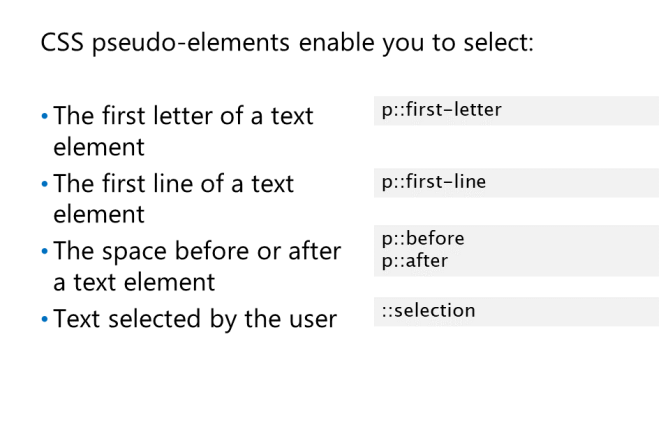
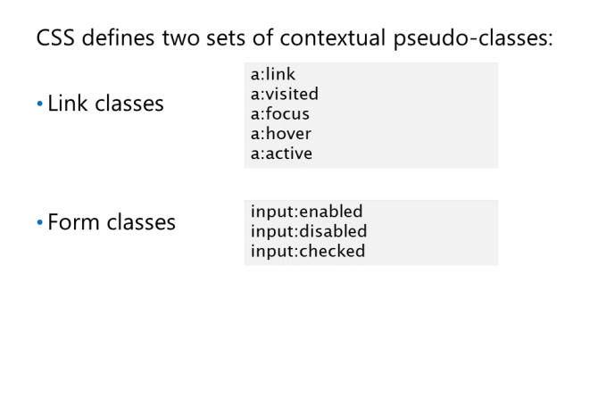
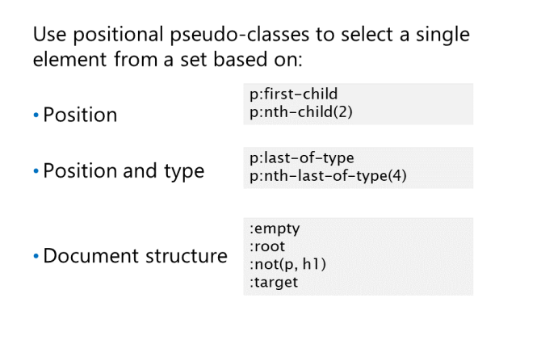

Pseudoelementy tekstowe
first-letter wybiera pierwszy znak
pierwszy wiersz treści tekstu elementu.
first-line wybiera pierwszy wiersz treści tekstowej
elementu.
before / after wybiera przestrzeń bezpośrednio przed / za elementem.
selection zaznacza część strony, która została wyróżniona przez użytkownika.(chyba chodzi o em)
zresetowanie arkusza stylów często normalizują sposób, w jaki przeglądarki radzą sobie z elementami q i blockquote, usuwając wszelkie inteligentne
cytaty, które mogą dodać wokół nich.
Link and Form Pseudo-Classes

• a:link selects all unvisited links.
• a:visited selects all visited links.
• a:focus selects all links in focus.
• a:hover selects all links with the cursor hovering over them.
• a:active selects all selected links.
Jeśli zdefiniujesz reguły CSS pasujące do więcej niż jednej z tych pseudoklas, ważne jest, abyś Ty
określ te pseudoklasy w następującej kolejności: link, visited, focus, hover, and active
Istnieją trzy pseudoklasy, których często używasz dla elementów formularzy:
• input:enabled selects all enabled input controls.
• input:disabled selects all user interface elements that are disabled.
• input:checked selects all user interface elements that are checked.
Pseudoklasy związane z DOM

•:first-child selects the item that's the first
child of its parent. As an example, to find the
first element in a list, use li:first-child.
• :last-child selects the list item that's the last
child of its parent.
• :only-child wybiera element listy, jeśli jest on jedynym
dzieciem rodzica.
• :nth-child(n) selects a list item if it is the nth child of its parent.
• :nth-last-child(n) wybiera element listy, jeśli jest n-tym dzieckiem swojego rodzica, odliczając wstecz od ostatniego
dziecka.
zamiast type wpisujemy element ktory nas interesuje
• :first-of-type selects a list item if it is the first list item child of its parent.
• :last-of-type selects a list item if it is the last list item child of its parent.
• :only-of type selects a list item if it is the only list item child of its parent.
• :nth-of-type(n) selects a list item if it is the nth list item child of its parent.
• :nth-last-of-type(n) selects a list item if it is the nth list item child of its parent, counting backwards
from its last child.
Dostępny jest również zestaw pseudoklas strukturalnych. Klasy te pozwalają wybrać elementy na podstawie
obecna struktura dokumentu. Te klasy obejmują:
E:root wybiera element główny dokumentu. W przypadku dokumentu HTML zawsze wybierze
html
element.
E:empty wybiera element typu E, jeśli nie ma on elementów potomnych ani treści.
E:target wybiera element typu E, jeśli jest on celem odsyłającego adresu URL.
E:not(s) wybiera dowolny element, który nie pasuje do łańcuchów selektora.